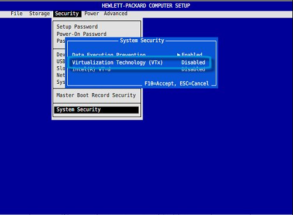
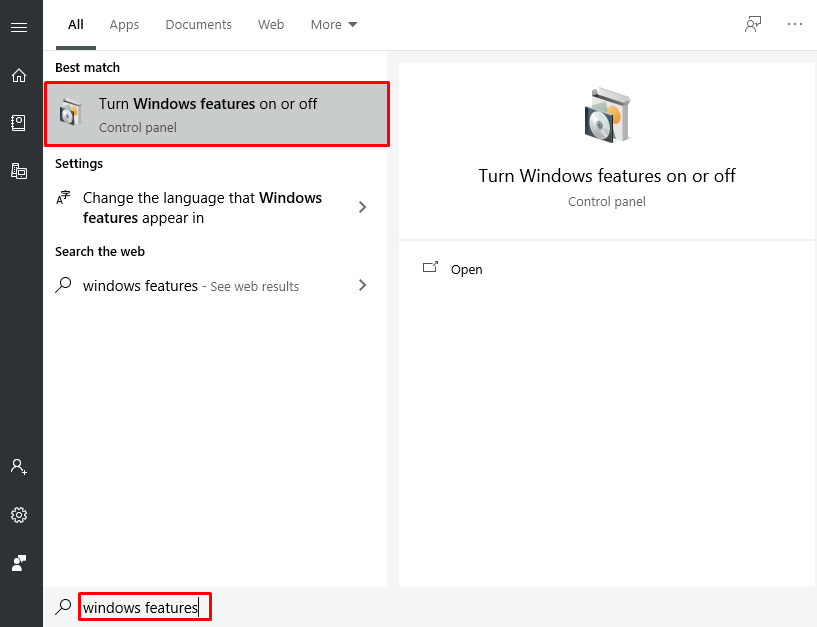
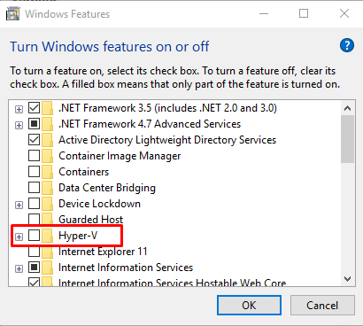

What is a virtual machine?
A virtual machine (VM) is a virtual environment that functions as a virtual computer system with its own CPU, memory, network interface, and storage, created on a physical hardware system.
What is the use of virtual machine?
Setting up virtual machine will allow you to setup an another operating system with different settings into your main or working operating system, It could be any new OS you can install it on your virtual machine like windows falovours, linux etc.
To achive this there are lots of third party software available on web, some are paid, some free and open source. Few of most popular are: virtual box, VM Ware, parallels etc.
But in the article i am going to detail about the in built feature of windows 10 through which you can enable that feature of virtual machine without install any other software into the operating system, i.e Hyper-v
How do i setup virtual machine?
First of all your physical machine or hardware has a virtualization feature should enabled, That can be acheive by go to the BIOS of the system at the start up. On start up of the machine there different keys for different hardware, generally F10 or F8. After click on that on startup a blue screen of BIOS will appear and you need to enable the virtualization option in it which looks lie below image

After enable this when the system start up, click on the start button and search for windows features

When the windwos features windwos appear, search for the Hyper-v option in it and check the checkbox for hyper-v and click on Ok button. It will take a few moment to enable that feature

When the feature will enable completely, you will see the hyper-v application on the start programs

check out next article to see how to setup a new virtual machine in windows 10 using hyper-v